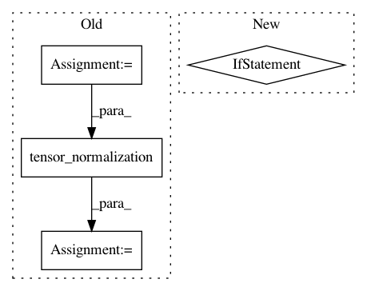

75e3f5e7892de6a0d86c0aa1bb9313b01d3ad485,python/src/nnabla/normalization_functions.py,,instance_normalization,#Any#Any#Any#Any#Any#Any#Any#,425
Before Change
// check batch axis
batch_axis = _check_batch_axis_and_force_list(len(x.shape), batch_axis)
axes = _get_axes_excluding(len(x.shape), [channel_axis, ] + batch_axis)
if output_stat:
out, mean, std = tensor_normalization(x, axes, eps, output_stat)
return out * gamma + beta, mean, std
return tensor_normalization(x, axes, eps, output_stat) * gamma + beta
After Change
// Unlike layer_norm and group_norm, only instance_norm can use bn scale bias & scale adaptation
// by broadcasting channel axis to channel * batch axis. (like [1, C, 1, 1] -> [N, C, 1, 1])
adapt_shape = [1 for _ in range(len(x.shape))]
for baxis in batch_axis:
adapt_shape[baxis] = x.shape[baxis]
adapt_shape[channel_axis] = x.shape[channel_axis]
In pattern: SUPERPATTERN
Frequency: 3
Non-data size: 4
Instances
Project Name: sony/nnabla
Commit Name: 75e3f5e7892de6a0d86c0aa1bb9313b01d3ad485
Time: 2019-10-22
Author: Akio.Hayakawa@sony.com
File Name: python/src/nnabla/normalization_functions.py
Class Name:
Method Name: instance_normalization
Project Name: sony/nnabla
Commit Name: 75e3f5e7892de6a0d86c0aa1bb9313b01d3ad485
Time: 2019-10-22
Author: Akio.Hayakawa@sony.com
File Name: python/src/nnabla/normalization_functions.py
Class Name:
Method Name: layer_normalization
Project Name: sony/nnabla
Commit Name: 55aa73bc5e486a6fd27daa8e055b2e7e45b964d5
Time: 2021-02-11
Author: nnabla@example.com
File Name: python/src/nnabla/normalization_functions.py
Class Name:
Method Name: layer_normalization